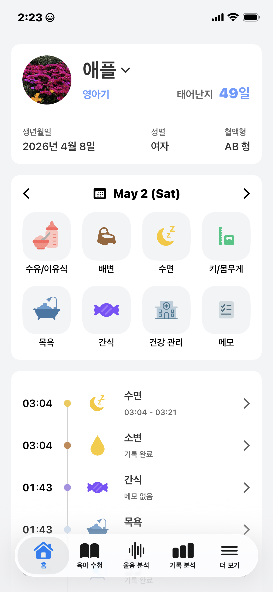
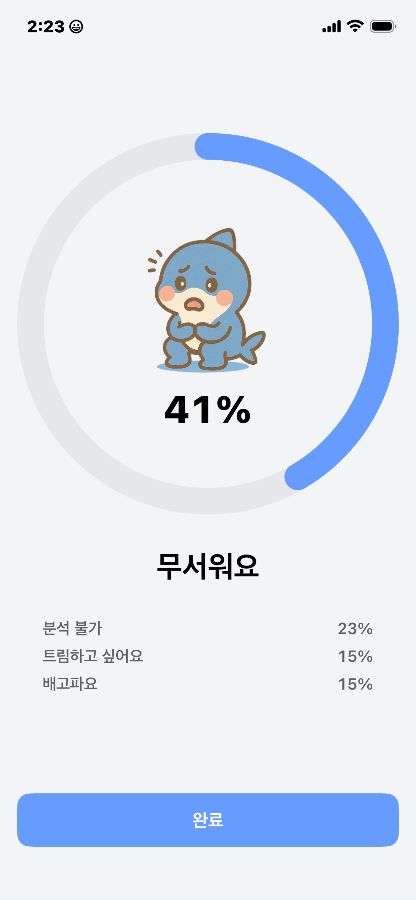
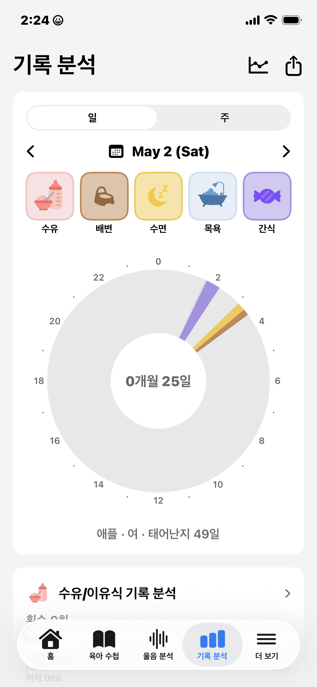
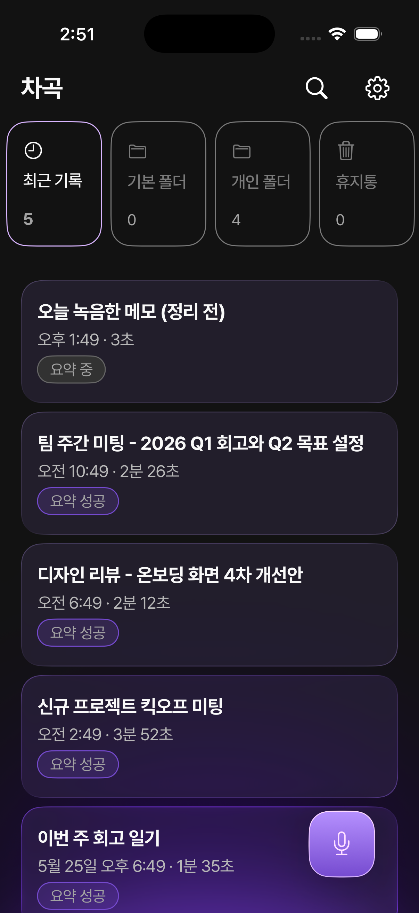
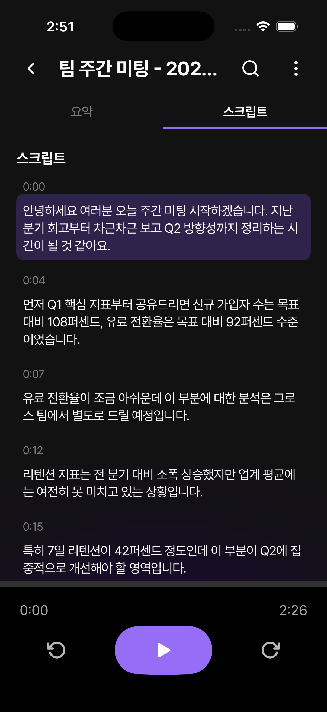
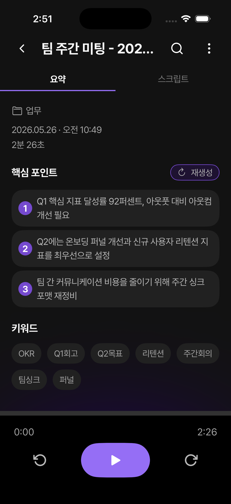
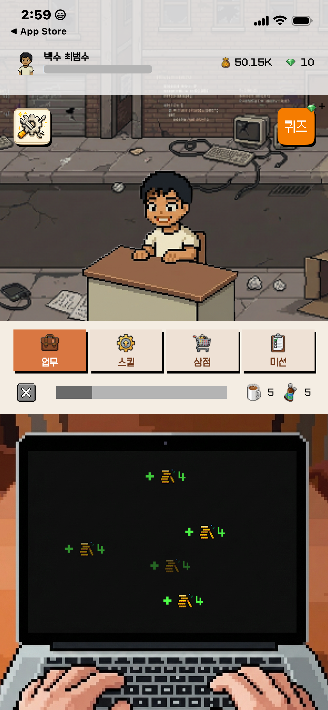
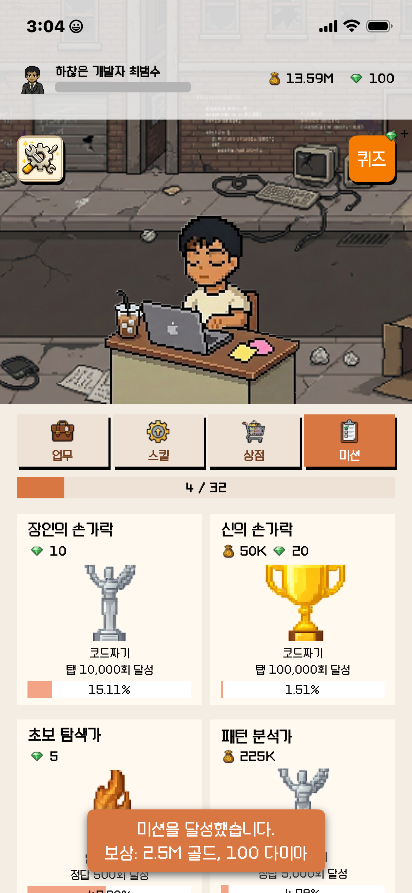
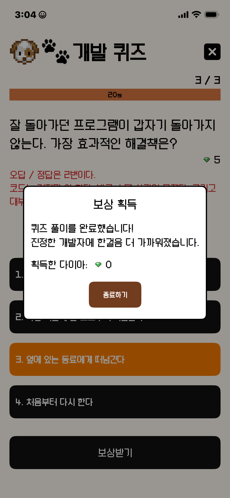

화면을 빠르게 만드는 것보다, 기능이 늘어난 뒤에도 이해하고 수정할 수 있는 구조를 더 중요하게 생각합니다. 의존성, 상태, 데이터 흐름을 분리해 오래 유지되는 iOS 앱을 만들고자 합니다.

홈 아기 정보와 빠른 육아 기록 입력
울음 분석 Core ML 기반 감정 비율과 주요 원인 확인
기록 분석 일/주 단위 육아 패턴 확인홈에서는 오늘의 기록을 빠르게 입력하고, 타임라인에서는 가족이 남긴 기록을 함께 확인합니다. 여기에 Core ML 기반 울음 분석과 가족 공유가 더해지면서, 화면 경험 뒤에는 Firebase 저장/조회, 이미지 캐시, 보호자 권한 처리가 함께 이어집니다. 이 케이스에서는 출시 이후 그 흐름을 더 안정적으로 다듬은 과정을 정리했습니다.
출시된 앱의 동작을 보존한 채, 화면·Domain 계약·Firebase Client 구현·live 주입 지점의 네 경계로 나눴습니다. 화면은 Firebase 구현이 아니라 Domain의 Client 계약에만 의존하고, 실제 Firestore 저장 방식은 Clients 구현 뒤로 숨겼습니다.
아기 프로필, 일지, 양육자 목록에서 같은 사진을 반복해서 보여줘야 했습니다. 화면마다 이미지를 따로 요청하면 같은 URL도 여러 번 다운로드되고, 화면 진입 첫 순간에는 placeholder가 다시 보였습니다.
마이 아이는 한 아이의 기록을 여러 보호자가 함께 보는 앱입니다. 초대된 가족은 기록과 사진을 볼 수 있어야 하고, 탈퇴하거나 제거된 사용자는 더 이상 접근하면 안 됩니다. 그래서 화면에서 보이는 아기 목록과 Firebase 보안 규칙이 서로 다른 보호자 기준을 보지 않도록, 권한 판단의 기준을 caregiverIDs 하나로 모았습니다.
caregivers:
[DocumentReference]
babies:
[DocumentReference]
mainCaregiverID: String
caregiverIDs: [String]
arrayContains(uid)
uid in caregiverIDs
arrayContains(uid)arrayUnion / arrayRemoveuid in caregiverIDs
녹음 목록 녹음 파일과 분석 상태를 한눈에 확인
전사 결과 STT 전사문을 확인하고 요약으로 이어짐
요약 온디바이스 요약과 핵심 내용 확인녹음을 저장하면 목록에서 분석 상태를 확인하고, 전사 결과를 거쳐 온디바이스 요약으로 이어집니다. 이 흐름 뒤에는 파일 저장, STT 요청, 요약 Task, 취소나 앱 종료 뒤의 상태 복구가 함께 움직입니다. 이 케이스에서는 사용자가 보는 분석 흐름이 끊기지 않도록 처리 순서와 상태 생명주기를 다듬은 과정을 정리했습니다.
차곡은 녹음을 저장하면 전사와 요약이 이어집니다. 사용자가 짧은 녹음을 빠르게 저장하면, 첫 번째 전사가 끝나기 전에 두 번째 전사 요청이 들어올 수 있었습니다. 이때 앱은 녹음 파일 자체의 실패와 외부 STT 자원 경합을 구분해서 보여줘야 했습니다.
// A 전사가 끝나기 전 B 전사 요청이 들어온 상황 A: saved -> transcribing B: saved -> transcription requested // 파일 실패가 아니라 STT 자원 경합 B.file == valid B.transcription == shouldWait
해결 기준은 화면에서 버튼을 막는 것이 아니라, STT 자원에 들어가는 입구를 하나로 만드는 것이었습니다. 분석 서비스는 transcribe 요청만 보내고, STTRepository actor가 isBusy와 waiters를 들고 시작, 대기, 해제 순서를 결정하게 했습니다.
transcribe 호출.transcriptionFailed로 남음waiters 큐에서 FIFO 순서로 대기actor STTRepository { private var isBusy = false• private var waiters: [CheckedContinuation<Void, Never>] = []• private func waitForSlot() async { if !isBusy {• isBusy = true; return• } await withCheckedContinuation { cont in waiters.append(cont)• } } private func releaseSlot() { if waiters.isEmpty { isBusy = false; return }• waiters.removeFirst().resume()• }}isBusy는 사용 중인지, waiters는 기다릴 요청 순서를 기억합니다.removeFirst()로 FIFO 순서를 지키고, 큐가 비면 다음 요청을 받을 수 있게 풉니다.차곡은 녹음이 끝나면 STT 전사와 요약 Task를 순서대로 실행합니다. 이때 사용자가 분석을 취소하거나 앱이 종료되면 DB에 transcribing, summarizing 같은 전이 상태가 남아 화면이 계속 로딩처럼 보일 수 있었습니다. 그래서 분석 서비스가 Task와 previousState를 함께 들고 있다가, 정리 시점에는 결과 데이터가 아니라 상태값만 판단하게 했습니다.
previousState)로 복구하고, transcript·summary는 보존합니다.
@MainActor•public final class DefaultVoiceNoteAnalysisService { private struct Entry {• let task: Task<Void, Never> let previousState: AnalysisState• } private var entries: [UUID: Entry] = [:] public func cancelAll() { let snapshot = entries• entries.removeAll() for (id, entry) in snapshot { entry.task.cancel() revertState(voiceNoteID: id, to: entry.previousState)• } } // transcribing / summarizing / regenerating일 때만 복구•}
미니게임 탭, 언어 맞추기, 버그 피하기, 데이터 쌓기
미션 플레이 기록 기반 목표와 보상 확인
퀴즈 개발 밈과 지식 기반 보상 콘텐츠플레이어는 탭, 퀴즈, 블록 쌓기 같은 미니게임으로 재화를 얻고, 미션과 아이템 강화로 성장합니다. 저는 판정 타이밍과 미션 조건 해석이 플레이 흐름과 어긋나지 않도록 게임 로직 기준을 정리했습니다. 이 케이스에서는 플레이 결과를 믿을 수 있는 상태와 보상 구조로 연결한 과정을 보여줍니다.
didSimulatePhysics()에서 물리 계산이 끝난 뒤에만 진입targetY에 도달한 순간에만 checkAlignmentAndHandle 실행override func didSimulatePhysics() {• guard let block = currentBlock else { return } let targetY = previousBlockTopY• guard block.position.y <= targetY else { return }• let result = stackGame.evaluateLanding(block.frame)• if result.isSuccess {• lockBlock(block) } else { keepPhysicsFalling(block) }}update()가 아니라 물리 계산 후 훅에서 targetY 도달 여부를 먼저 봅니다.frame만 넘기고, 정렬 성공 여부는 게임 모델이 계산합니다.update()에서 위치를 추정하지 않고,
didSimulatePhysics()에서 확정된 좌표만 판정 기준으로 삼은 것입니다.
개발자 키우기의 미션은 탭, 언어 맞추기, 버그 피하기, 블록 쌓기, 플레이 시간처럼 서로 다른 이벤트를 같은 보상 루프로 연결해야 했습니다. 핵심은 화면마다 “이 미션을 어떻게 계산하지?”를 반복하지 않고, 화면은 기록만 남기고 미션 구조가 조건 해석과 보상 상태 전환을 맡게 하는 것이었습니다.
MissionConfig가 제목, 목표값, 보상을 보관MissionType이 기록에서 볼 값을 선택MissionSystem이 claimable, claimed 상태를 관리let configs: [MissionConfig] = [ .tap(count: 100, reward: 50), .quiz(correct: 10, reward: 80)]func createAllMissions() -> [Mission] { configs.map { Mission(config: $0) }}MissionConfig 배열이 미션 목록의 원천이 되면서, 32개 미션 초기화가 화면 코드에서 빠졌습니다.func currentValue(_ r: GameRecord) -> Int { switch self { case .tap: return r.tapCount case .quiz: return r.quizCorrect case .stack: return r.stackScore }}MissionType이 기록에서 어떤 값을 볼지 결정하므로, 각 화면은 미션 완료 조건을 알 필요가 없습니다.읽어주셔서 감사합니다. 더 자세한 구현은 GitHub에 남겨두었습니다. 구조를 고민하고, 문제를 끝까지 파고드는 개발자로 함께하겠습니다.